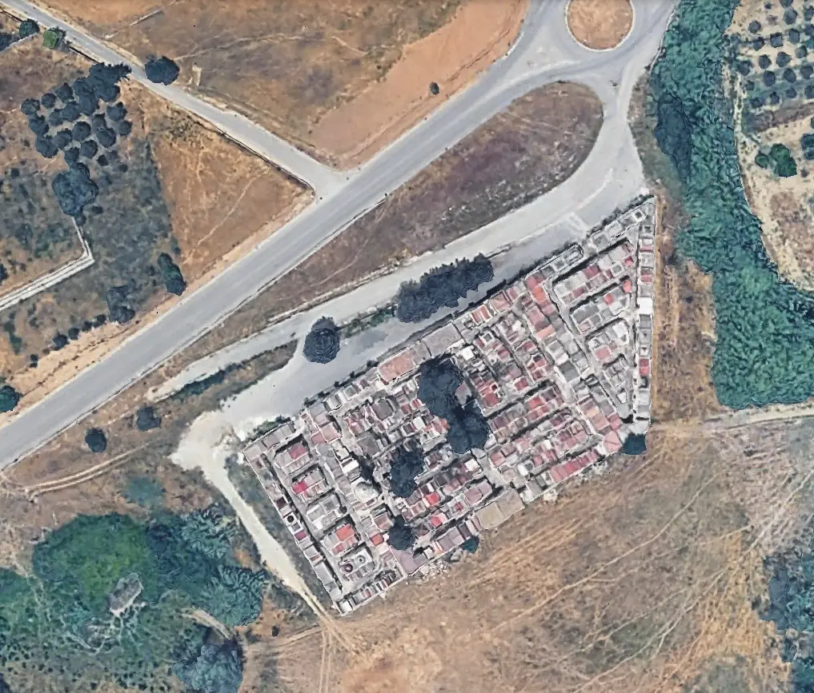

Archivio storico dei defunti del cimitero comunale
Consulta l'archivio storico del Cimitero di Tarsia, ricerca i nominativi presenti e individua le informazioni disponibili sulla posizione del defunto.
Consulta i nominativi presenti nell'archivio storico.
Individua zona, via e loculo del defunto ricercato.
Invia una fotografia del familiare per completare l'archivio storico.

Il cimitero comunale custodisce la memoria storica della comunità di Tarsia. Attraverso questo archivio digitale è possibile consultare i nominativi presenti nei registri storici e individuare la posizione dei defunti.
Indirizzo:
Cimitero Comunale di Tarsia
87040 Tarsia (CS)
Orari di apertura:
Tutti i giorni dalle 08:00 alle 17:00
Hai fotografie storiche o informazioni da aggiungere? Puoi contribuire alla valorizzazione della memoria della comunità.
Contatti e segnalazioni